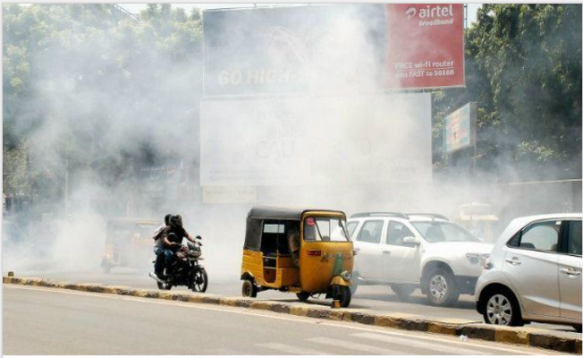
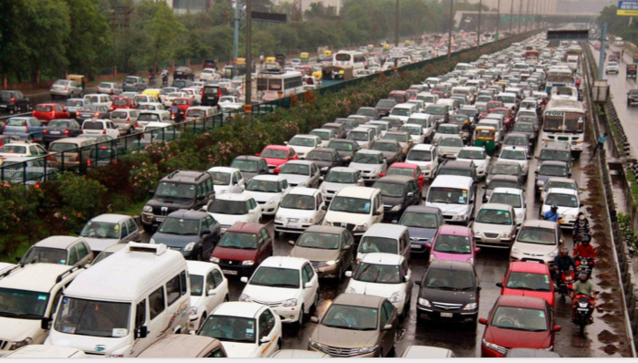
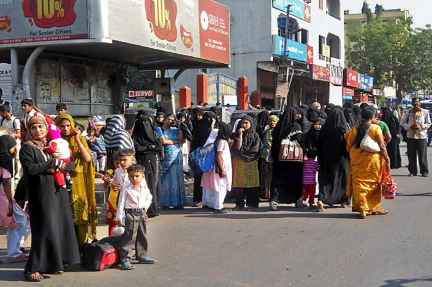
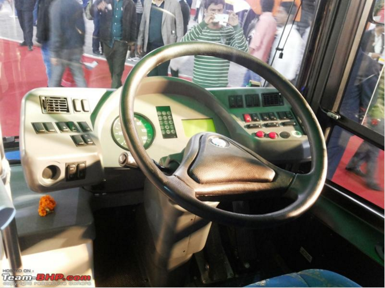

TransRev
Connecting People and Transit
Team-Aryabhata Problem/Opportunity
Air Pollution
Traffic Congestion
Overcrowding/Safety Concers

Accidents
Endless Wait
Bus Maintenances and Services
Value Proposition
Improve public transport services
Underlying Magic/Technology
Different background transitions are available via the backgroundTransition option. This one's called "zoom".
transrev.tech({ frugal solutions })Business Model
Different background transitions are available via the backgroundTransition option. This one's called "zoom".
transrev.business({ targeted ad-revenue })Go to Market
Different background transitions are available via the backgroundTransition option. This one's called "zoom".
transrev.deploy({ incremental modal })Current Status
Different background transitions are available via the backgroundTransition option. This one's called "zoom".
transrev.status({ in progress })Team
In forest - We are all kinds of animals.
transrev.team({ animals });Future Scope
Different background transitions are available via the backgroundTransition option. This one's called "zoom".
Reveal.configure({ backgroundTransition: 'zoom' })